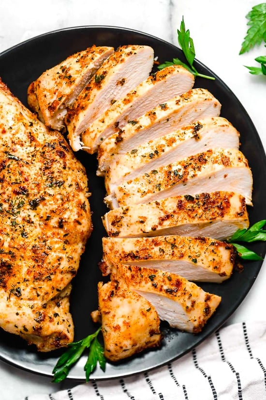

Chicken Breast

Pan seared chicken breast. This is simple to make with room for your own alterations. Also, I don't measure anything. Sorry.
Ingredients
- Chicken breast
- Any seasoning blend
- Olive oil
Steps
- Preheat pan to medium-high heat
- While pan is preheating season chicken breast
- Put some olive oil in pan when it is heated
- Cook chicken in pan
- Flip chicken after ~5 minutes
- Time will vary based on the size of the chicken. It is done when the internal temperature is 165°F
- When it is cooked through take the chicken out of the pan and let it rest.